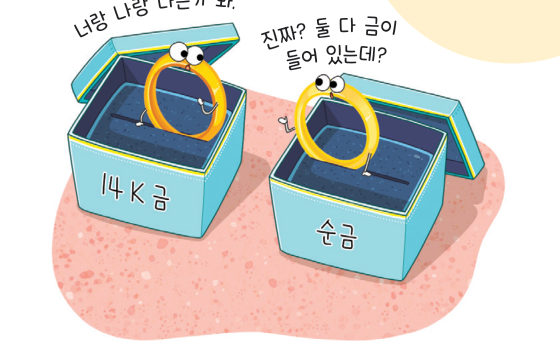
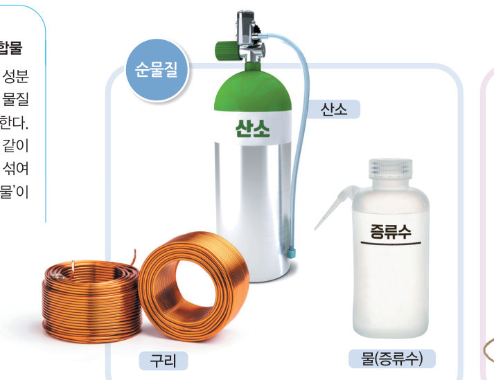
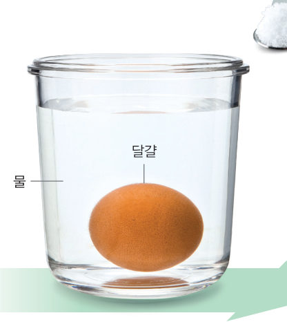
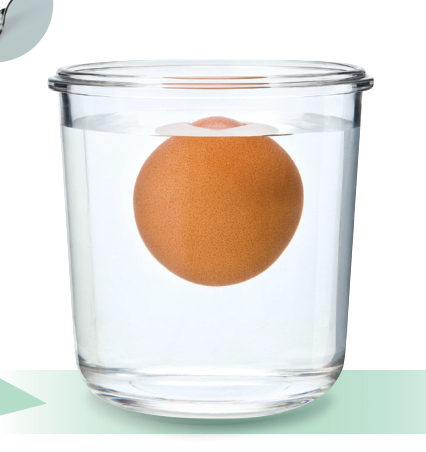
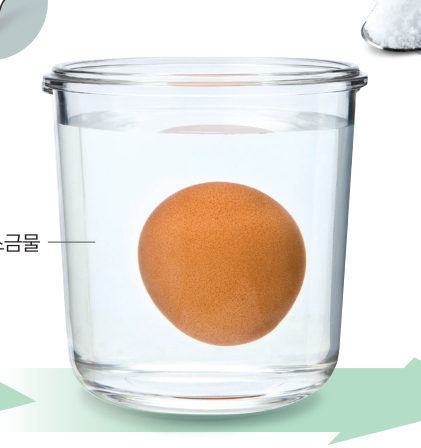
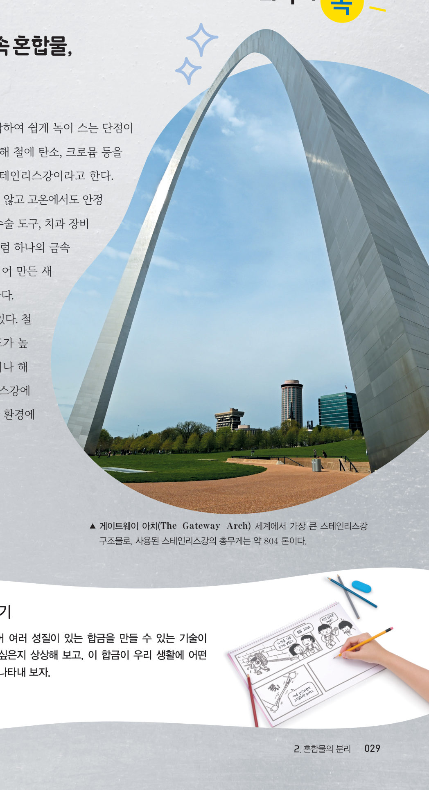

우리 주변에 있는
순물질과 혼합물
“너랑 나랑 다른가 봐.” “진짜? 둘 다 금이 들어 있는데?” 순금 반지와 14 K 금반지를 따로 분류한 기준은 무엇일까? 입자 돋보기로 물질 속을 들여다보고, 달걀이 떠오르는 소금물과 끓는 소금물로 혼합물의 특성을 확인하자.
“감자에서 녹말을 얻으려고 감자를 갈아서 물에 담갔다가, 체로 걸렀더니 녹말과 물만 남았어.” 이 단원의 힌트 조각을 모으면 물질의 특성을 이용해 혼합물을 분리하는 원리를 알아내어 두 번째 블록 질문에 답할 수 있다.
이 단원과 관련해 이미 알고 있는 것에 표시해 보자.
우리 주변의 물질을 어떻게 분류할 수 있을까?
순금은 금 한 가지 물질로 이루어져 있지만, 14 ●K 금은 금 이외에 다른 금속이 섞여 있다. 순금과 같이 한 가지 물질로 이루어진 물질을 순물질이라고 한다. 반면 14 K 금과 같이 두 가지 이상의 순물질이 섞여 있는 물질을 혼합물이라고 한다.

더 알아보기 · 균일 혼합물과 불균일 혼합물
공기, 설탕물 등과 같이 성분 물질이 고르게 섞여 있는 물질을 균일 혼합물이라고 한다. 반면 암석, 흙탕물 등과 같이 성분 물질이 고르지 않게 섞여 있는 물질은 불균일 혼합물이라고 한다.
| 물질 | 물질의 특성 | 분류 |
|---|---|---|
| 우유 | 밀도: 1.03~1.04 g/mL(15 ℃) 끓는점: 95~101 ℃(1 기압) | |
| 헬륨 | 밀도: 0.000170 g/mL(20 ℃, 1 기압) 끓는점: ℃(1 기압) | |
| 포도당 | 밀도: g/cm³(25 ℃) 물에 대한 용해도: 90.9(20 ℃) | |
| 스테인리스강 | 밀도: 7.70~8.03 g/cm³ 녹는점: 1350~1530 ℃(1 기압) | |
| 공기 | 밀도: 약 0.00120 g/mL(20 ℃, 1 기압) 녹는점, 끓는점: 구할 수 없음. | |
| 에탄올 | 밀도: g/mL(20 ℃) 끓는점: 78.2 ℃(1 기압) |
더 해 보기 · 우리 주변의 순물질과 혼합물 조사하기
우리 주변의 순물질과 혼합물을 조사하고, 각 혼합물은 어떤 순물질로 이루어져 있는지 정리해 보자.
밀도, 용해도, 녹는점, 끓는점 등과 같은 물질의 특성을 이용하면 우리 주변의 물질을 순물질과 혼합물로 분류할 수 있다. 순물질은 특정한 조건에서 밀도, 용해도, 녹는점, 끓는점 등이 항상 일정하다. 반면 혼합물은 섞여 있는 순물질의 비율에 따라 물질의 특성이 달라진다.
예를 들어 그림 1-10과 같이 달걀을 물에 넣으면 가라앉지만, 물에 소금을 조금씩 넣어 녹이면 달걀이 조금씩 떠오른다. 이는 물에 녹인 소금의 양이 많아질수록 소금물의 밀도가 커지기 때문이다.



그림 1-10 소금물의 밀도에 따른 달걀의 위치 변화
혼합물은 끓는점이 일정하지 않다. 물은 100 ℃에서 끓지만 소금물은 100 ℃보다 더 높은 온도에서 끓기 시작하고, 끓는 동안에도 온도가 계속 높아진다. 이는 소금물이 끓는 동안 물이 기화하여 소금물이 점점 진해지기 때문이다.

순수한 철은 단단하지만, 산소와 결합하여 쉽게 녹이 스는 단점이 있다. 철에 탄소, 크로뮴 등을 혼합하여 만든 금속이 스테인리스강이다. 스테인리스강은 녹이 잘 슬지 않고 고온에서도 안정적이라 싱크대, 조리 도구, 수술 도구, 치과 장비 등에 활용한다. 이처럼 하나의 금속에 성질이 다른 하나 이상의 물질을 섞어 만든 새로운 성질이 있는 금속을 합금이라고 한다. 철에 니켈을 섞으면 잘 녹슬지 않고 강도가 높은 합금을 만들 수 있어 항공기 부품이나 해양 구조물 등에 사용한다.
| ③ 순물질의 밀도는 일정하지만, 혼합물의 밀도는 섞여 있는 순물질의 비율에 따라 달라진다. | |
| ④ 압력이 일정할 때, 순물질과 혼합물은 모두 끓는점이 일정하다. | |
| ⑤ 순물질과 혼합물은 물질의 특성을 이용하여 분류할 수 있다. |
⑦ 물에 달걀을 넣고 소금을 조금씩 넣어 녹일 때 달걀이 떠오르는 까닭으로 옳은 것을 모두 고르시오.
1순물질과 혼합물
⑵ 혼합물: 두 가지 이상의 순물질이 섞여 있는 물질 — 섞여 있는 순물질의 에 따라 물질의 특성이 달라진다.
⑶ 성분 물질이 고르게 섞인 혼합물(공기, 설탕물)과 고르지 않게 섞인 불균일 혼합물(암석, 흙탕물)이 있다.
| 평가 기준 | 스스로 평가 |
|---|---|
| 지식·이해 순물질과 혼합물을 분류할 수 있는 기준을 설명할 수 있는가? | |
| 과정·기능 온도, 압력 등의 조건을 포함하여 여러 가지 물질의 특성을 옳게 조사했는가? | |
| 가치·태도 분류 활동을 하면서 열린 태도로 친구들의 의견을 경청했는가? |